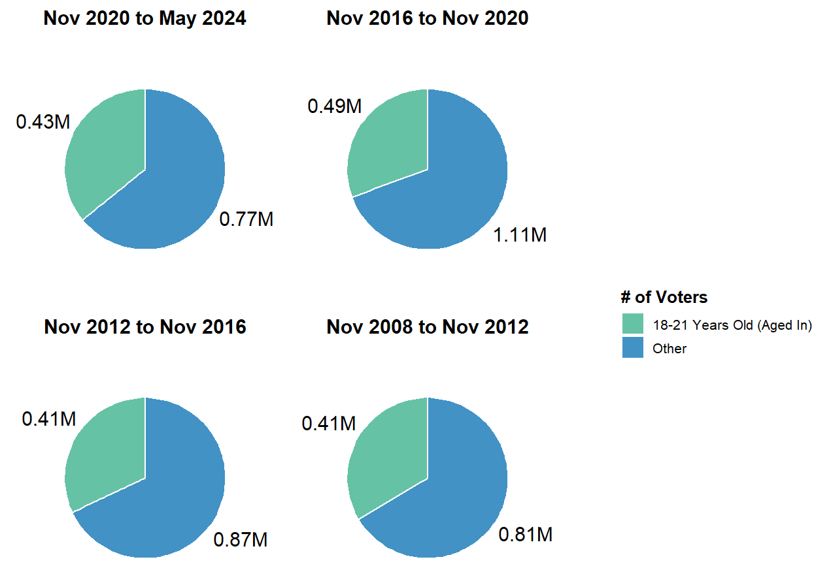
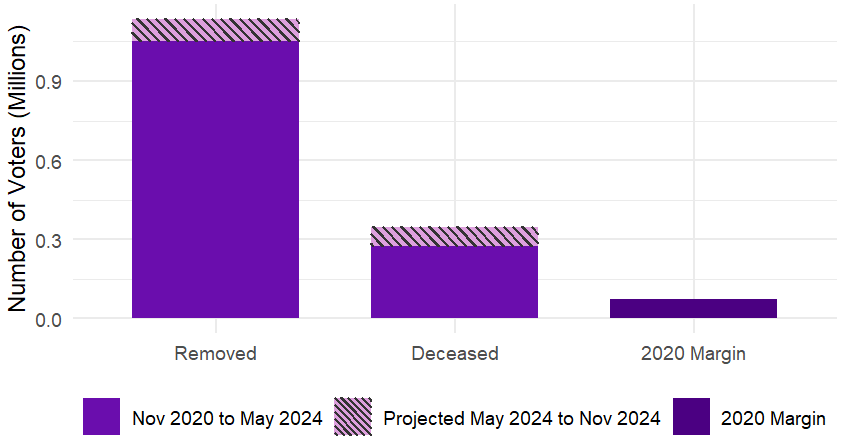
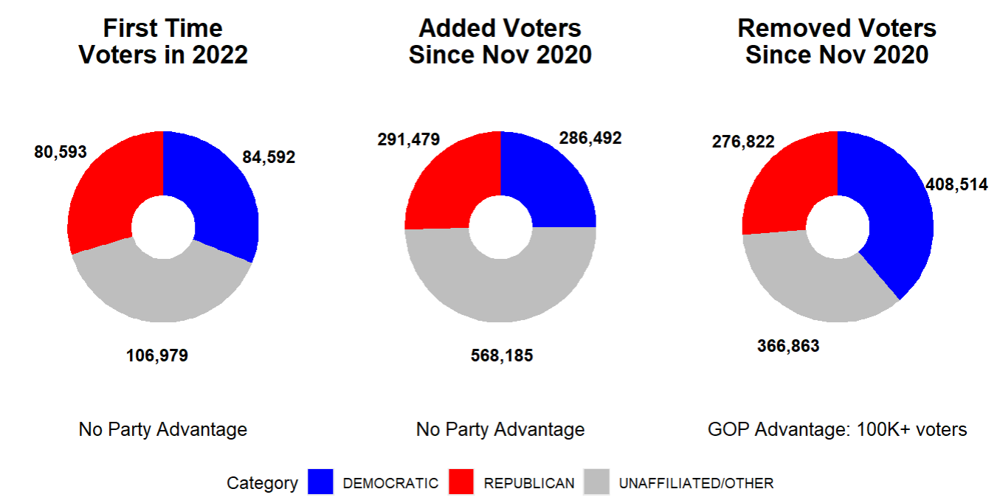

The Change Among Registered Voters from 2020 to 2024 Will Be Significant
- Chart inspired by Bloomberg's article on the changes in the eligible voting population
- Data and projections are for voters in North Carolina’s voter files
▶
New Voters and Voters Aged 18-21 Larger Than the 2020 Presidential Margin
Added Voter Breakdown for May 2024 and Three Most Recent Election Cycles
◀
▶
↓
Removed and Deceased Voters Larger Than the 2020 Presidential Margin
Removed Voter Breakdown for May 2024 and Three Most Recent Election Cycles
◀
▶
↓
2020 North Carolina Presidential Election By County - Interactive
◀
- Biden: the biggest vote margins were from Raleigh and Charlotte
- Trump:the biggest vote margins were from regions next to Greensboro and Charlotte
▶
Breakdown By Party Registration: GOP Has the Advantage
◀

- Major Caveat: Party preference of the largest group, Unaffiliated/Other, is unknown.